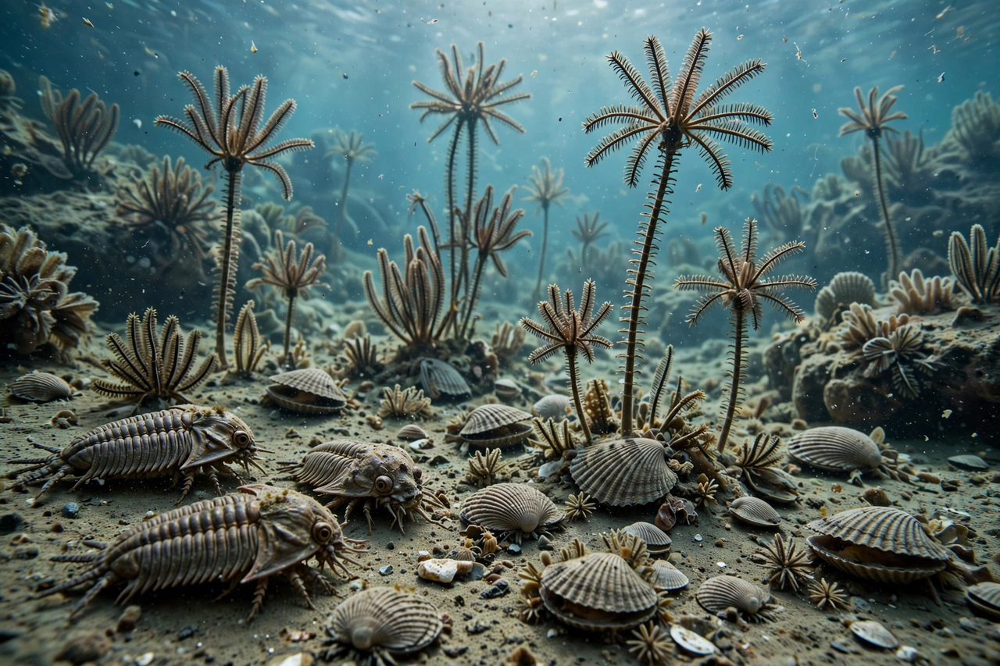

Paleozoic

| Paleozoic Era | |
|---|---|
| Span | 541 – 251.9 million years ago |
| Periods | Cambrian, Ordovician, Silurian, Devonian, Carboniferous, Permian |
| Preceded by | Proterozoic Eon |
| Followed by | Mesozoic Era |
The Paleozoic Era (from Greek palaiós "old" and zōḗ "life", meaning "ancient life") is the first of three geological eras of the Phanerozoic Eon, spanning from about 541 to 251.9 million years ago. It is the longest of the Phanerozoic eras, lasting roughly 289 million years, and is subdivided into six geologic periods: the Cambrian, Ordovician, Silurian, Devonian, Carboniferous and Permian.
Life
The era opens with the Cambrian explosion, the rapid appearance of most major animal phyla, including the trilobites that would dominate early marine faunas. Fish, the first vertebrates, appeared in the Cambrian and diversified greatly in the Devonian, the "Age of Fish". Life colonised the land: plants spread during the Silurian and Devonian, forests of giant club mosses and horsetails formed the great coal swamps of the Carboniferous, and tetrapods evolved from lobe-finned fish in the late Devonian. By the Permian, reptiles and the mammal-like synapsids dominated terrestrial ecosystems.
Geography and climate
At the era's start the supercontinent Rodinia had broken up; continents gradually reassembled through the era, culminating in the formation of Pangaea in the late Carboniferous and Permian as Gondwana collided with Laurentia and Baltica, raising the Appalachian and Variscan mountain belts. Climate swung between greenhouse warmth and ice ages, including the late Ordovician glaciation and the long Karoo Ice Age.
The end-Permian extinction
The era ended with the Permian–Triassic extinction event, the largest mass extinction in Earth's history, which eliminated an estimated 90 percent or more of marine species and set the stage for the rise of the dinosaurs in the succeeding Mesozoic Era.
See also: Geologic time scale · Burgess Shale · Great Ordovician Biodiversification Event